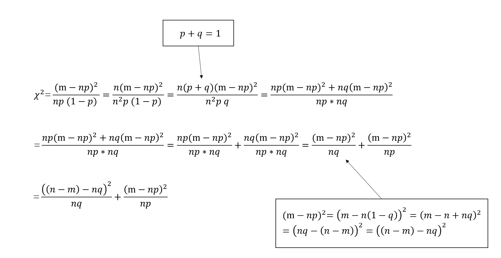
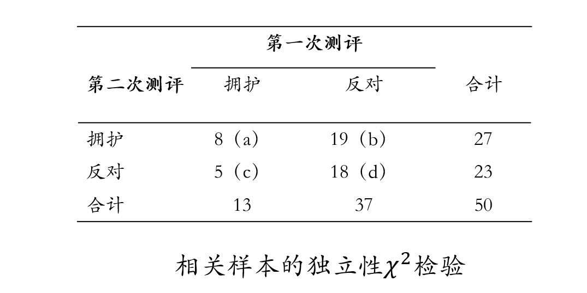

lecture 11
卡方检验
Hu Chuan-Peng
2023-11-21
本次课内容
卡方检验的基本原理
适合性\(\chi^2\)检验
独立性\(\chi^2\)检验
第五课：线性模型简介
第六课：简单线性模型
第七课：多元线性模型
第八课：线性模型中的虚拟变量与广义线性模型
第九课：分层线性模型
第十课：常用统计检验均是线性模型
线性模型的三种视角

| 简单线性模型 | 多元线性模型 | 广义线性模型 | 分层线性模型 | 广义线性混合模型 | |
|---|---|---|---|---|---|
| 自变量 | 一个 | 多个 | 一个或多个 | 一个或多个 | 一个或多个 |
| 因变量 | 连续变量 | 连续变量 | 连续/分类变量 | 连续变量 | 连续/分类变量 |
| 数据层级 | 一层 | 一层 | 一层 | 多层 | 多层 |
| 分布形态 | 正态分布 | 正态分布 | 多种分布 | 正态分布 | 多种分布 |
| 连接函数 | g(z)=z | g(z)=z | g(z)=q | g(z)=z | g(z)=q |
| 传统的检验(R代码) | 线性模型(R代码) | |
|---|---|---|
| 相关 | cor.test(x,y,method=‘Pearson’) cor.test(x,y,method=‘Spearman’) |
lm(y~1+x) lm(rank(y)~1+rak(x)) |
| 单样本t检验 | t.test(y) | lm(y~1) |
| 独立样本t检验 | t.test(y1,y2,var.equal=TRUE) | lm(y~ 1+G2)A |
| 配对样本t检验 | t.test(y1,y2,paired=TRUE) | lmer(y~x+(1|subject)) lm(y_1-y_2~1) |
| 单因素方差分析 | aov(y~group) | lm(y~ 1+G2+G3+…)A |
| 两因素方差分析 | aov(y~group+sex) | lm(y~ 1+G2+G3+…+S2+S3+…+G2*S2+…) |
Part1: 卡方检验的基本原理
某公司为某产品设计了4种包装，试图研究哪种包装更能引起消费者的购买欲？
公司将4种包装的相同产品摆放在超市货架，一段时间后，统计产品的销售情况如下:
| 包装类型 | A | B | C | D | 合计 |
|---|---|---|---|---|---|
| 购买人数 | 42 | 59 | 48 | 51 | 200 |
能否认为4种包装能引起消费者的购买欲存在差异？
能否认为4种包装能引起消费者的购买欲存在差异？
能否认为4种包装的差异是由抽样误差引起？
检验样本频数分布是否在抽样误差允许的波动范围
卡方检验
样本中得到的不同类别的频数称为观察频数\(f_{observed}\)，按期望分布计算得到的频数称为期望频数或理论频数\(f_{expected}\)
\[\chi^2=\sum \frac{(f_{observed}-f_{expected})^2}{f_{expected}}\] \(\chi^2\)反映了实际的观察频数与期望频数的偏离程度
卡方值
\[\chi^2=\sum \frac{(f_{observed}-f_{expected})^2}{f_{expected}}\]
\(\chi^2\)反映了实际的观察频数与期望频数的偏离程度
\(f_{observed}=f_{expected},\chi^2=0\)
相差越小，\(\chi^2\)越小
相差越大，\(\chi^2\)越大
卡方分布
卡方分布
- 由自由度(df)决定的正偏态分布。

卡方分布
卡方分布
\(\chi^2\)都是正值。
\(\chi^2\)分布呈现正偏态，右端无限延伸，不与基线相交。
卡方分布
卡方分布
自由度越大，分布越趋向对称，极限分布为正态分布。
几个\(\chi^2\)变量的和仍然服从\(\chi^2\)分布（可加性）。
卡方分布的统计量
当卡方分布用于检验不同类别的频数分布时，不同类别的频数分布服从二项式分布（近似正态分布）。
其中, n为总次数，m为其中一类出现的次数，\(p_{i}\)为m出现的概率
\(E(X_{i})=np_{i}\)
\(Var(X_{i})=np_{i}(1-p_{i})\)
\(\chi = \frac{m-np_{i}}{\sqrt{np_{i}(1-p_{i})}}\)
\(\chi^2 = \frac{(m-np_{i})^2}{np_{i}(1-p_{i})}\)
公式推导
\(\chi^2 = \frac{(m-np_{i})^2}{np_{i}(1-p_{i})}\)
使用n=np+n(1-p)，q=1-p
\(\rightarrow \chi^2=\frac{(m-np)^2}{np}+\frac{(n-m-nq)^2}{nq}，推导过程见下页\)
- 因为n=m+(n-m)
\(\rightarrow \chi^2=\sum \frac{(X_{i}-E(X_{i}))^2}{E(X_{i})}\)
公式推导
卡方检验：衡量模型与实际观察到的数据的比较情况。
\(\chi^2\)取决于实际值与观测值之间的差异大小、自由度以及样本大小。
\(\chi^2\)是在给定样本大小和分类变量的频数的情况下，比较预期结果和实际结果之间差异的大小。常用于分析分类变量的差异，尤其是那些名义变量。
应用
Goodness of fit to a distribution
\(\chi^2\)可以用来检验频率的观测分布和理论分布之间的拟合优度。
- 实际的观察频数与期望频数间差异是否显著，从而确定观测分布和理论分布是否相符，又称为单因素\(\chi^2\)检验。
应用
Test for independence
\(\chi^2\)也可以用来检验两个变量是相关的还是独立的。
- 研究分类变量或等级变量是否相关，用于两个多项分类变量的计数资料的分析。
应用
Minimum Chi-squared estimation
- 对于服从正态分布、泊松分布或二项分布等参数分布的数据集，卡方检验可用于找出观测值服从理论分布的参数范围。
Goodness of fit of a regression model
- \(\chi^2\)可用于测量训练、验证或测试数据集上训练过的回归模型的拟合优度。
Goodness of fit of nested regression models
- 偏差统计量可以用来比较嵌套回归模型的对数似然，在零假设下服从卡方分布，即添加回归变量不会增加模型的拟合优度。因此，选择两种模型中较简单的一种可能会更好。
Residual Analysis
- 在某些广义线性回归模型中，皮尔逊残差在零假设下服从(比例)卡方分布，即残差是独立的、同分布的正态变量，表明拟合模型的拟合优度很高。
Relationship to the G-squared test
- 当观察值和期望值接近时，G检验的拟合优度与卡方检验的拟合优度相似。
局限
卡方检验对样本量敏感。使用了一个非常大的样本时，两个变量间的关系可能变得显著。
卡方检验不能确定一个变量与另一个变量之间是否存在因果关系，它只能确定两个变量是否相关。
Part2: 适合性卡方检验(Goodness of fit)
公司将4种包装的相同产品摆放在超市货架，一段时间后，统计产品的销售情况如下:
| 包装类型 | A | B | C | D | 合计 |
|---|---|---|---|---|---|
| 购买人数 | 42 | 59 | 48 | 51 | 200 |
能否认为4种包装的差异是由抽样误差引起？
workflow
1.提出假设
\(H_0\): 4种包装引起消费者的购买欲不存在差异（期望频数服从均匀分布）
期望频数分布: \(f_{eA}=f_{eB}=f_{eC}=f_{eD}= 200/4 =50\)
\(H_1\)： 4种包装引起消费者的购买欲存在差异
2.根据虚无假设\(H_0\)，选择相应的统计模型。
\(\chi^2\)检验前提：
随机样本数据
理论频数>5或理论频数<5的格子数不能超过总格子数的1/5。
理论频数>5或理论频数<5的格子数不能超过总格子数的1/5。
\(\chi^2=\sum \frac{(f_{observed}-f_{expected})^2}{f_{expected}}\)
如果零假设成立， \(f_{observed}-f_{expected}\)差异很小，可能远小于\(f_{expected}\)，卡方值较小，则结果倾向于判断各组无差异，与假设一致。
如果零假设成立，\(f_{expected}<5\)；\(f_{observed}-f_{expected}\)差异很小，但是相对于分母\(f_{expected}\)较大，最终得到的卡方值较大，结果倾向于判断各组存在差异。
3.确定显著性水平\(\alpha\)，\(\alpha\)确定后，否定域也随之被确定了
指定\(\alpha\)=0.05(拒绝零假设犯错的可能性)
单侧检验的临界点 df = 4–1 = 3, \(\chi^2_{0.05,3}\)=7.81
4.基于\(H_0\)所设定的统计模型，计算检验统计量的值。
- \(\chi^2=\sum \frac{(f_{observed}-f_{expected})^2}{f_{expected}} = \frac{(42-50)^2}{50}+\frac{(59-50)^2}{50}+\frac{(48-50)^2}{50}+\frac{(51-50)^2}{50}=2.98\)
5.做出决策
单侧检验的临界点df = 4–1 = 3, \(\chi^2_{0.05,3}\)=7.81
\(\chi^2\)= 2.98 < \(\chi^2_{0.05,3}\)
在\(\alpha\) = 0.05显著性水平上不能拒绝虚无假设，即没有证据支持4种包装能够引起消费者购买欲的差异。
结果呈现
- 4种包装引起消费者的购买欲相比较差异没有统计学意义(\(\chi^2\) = 2.98 , \(p\) > 0.05)。
Part3: 独立性卡方检验
示例1
- 某教师提出一套新的教学办法，为了比较效果，随机抽取240名大一新生，随机分为两组，分别接受新旧两种办法的训练，学期末进行达标测试。
- 某教师提出一套新的教学办法，为了比较效果，随机抽取240名大一新生，随机分为两组，分别接受新旧两种办法的训练。
| 未达标 | 达标 | 合计 | ||
|---|---|---|---|---|
| 旧方法 | 64(a) | 56(b) | 120 | |
| 新方法 | 46(c) | 74(d) | 120 | |
| 合计 | 110 | 130 | 240 |
独立样本的独立性\(\chi^2\)检验
workflow
1.提出假设
\(H_0\): 新旧两种办法的训练的效果不存在差异(采用新或旧方法的达标人数比率相同）
各单元格期望频数 ：
计算”新方法 × 达标”这一单元格人数：
240人中130人达标，新方法120人，\(f_{e}\) = 120 *130/240 = 65
各单元格期望频数 ：
计算”新方法 × 达标”这一单元格人数：
240人中130人达标，新方法120人，\(f_{e}\) = 120*130/240 = 65
一个单元格的期望频数: \(f_{e} = (n_{r}*n_{c})/N\)
\(n_{r}\) : 计算单元格所在行的总次数
\(n_{c}\) :计算单元格所在列的总次数
| 未达标 | 达标 | 合计 | ||
|---|---|---|---|---|
| 旧方法 | 64(a) | 56(b) | 120 | |
| 新方法 | 46(c) | 74(d) | 120 | |
| 合计 | 110 | 130 | 240 |
\(f_{e}=\frac{n_{r}n_{c}}{N}\)
\(\chi^2=\frac{(a-\frac{(a+b)(a+c)}{N})^2}{\frac{(a+b)(a+c)}{N}}+\frac{(b-\frac{(a+b)(b+d)}{N})^2}{\frac{(a+b)(b+d)}{N}}+\frac{(c-\frac{(c+d)(a+c)}{N})^2}{\frac{(c+d)(a+c)}{N}}+\frac{(d-\frac{(b+d)(d+c)}{N})^2}{\frac{(b+d)(d+c)}{N}}\)
\(\chi^2=\frac{(a-\frac{(a+b)(a+c)}{N})^2}{\frac{(a+b)(a+c)}{N}}+\frac{(b-\frac{(a+b)(b+d)}{N})^2}{\frac{(a+b)(b+d)}{N}}+\frac{(c-\frac{(c+d)(a+c)}{N})^2}{\frac{(c+d)(a+c)}{N}}+\frac{(d-\frac{(b+d)(d+c)}{N})^2}{\frac{(b+d)(d+c)}{N}}\)
上下同乘以\(N^2 \rightarrow \chi^2=\frac{(Na-(a+b)(a+c))^2}{N(a+b)(a+c)}+\frac{(Nb-(a+b)(b+d))^2}{N(a+b)(b+d)}+...\)
\(N=a+b+c+d,d=N-a-b-c\)
\(\rightarrow \chi^2=\frac{(ad-bc)^2}{N(a+b)(a+c)}+\frac{(ad-bc)^2}{N(a+b)(b+d)}+\frac{(ad-bc)^2}{N(a+c)(c+d)}+\frac{(ad-bc)^2}{N(b+d)(d+c)}\)
\(=(ad-bc)^2\frac{N((c+d)+(a+b))}{(a+b)(c+d)(a+c)(b+d)}\)
\(\rightarrow \chi^2=\frac{N(ad-bc)^2}{(a+b)(c+d)(a+c)(b+d)}\)
一个单元格的期望频数:\(f_{e}=\frac{n_{r}n_{c}}{N}\)
\(\rightarrow\)推导后
\(\chi^2= N(\sum \frac{f_{o}^2}{n_{r}n_{c}}-1)\)
df=(r-1)(c-1)
1.提出假设
\(H_0\): 新旧两种办法的训练的效果不存在差异
一个单元格的期望频数:\(f_{e}=\frac{n_{r}n_{c}}{N}\)
\(H_1\): 新旧两种办法的训练的效果存在差异
2.根据虚无假设\(H_0\)，选择相应的统计模型。
\(\chi^2\)检验前提：
随机样本数据
理论频数>5或理论频数<5的格子数不能超过总格子数的1/5。
3.确定显著性水平\(\alpha\)，\(\alpha\)确定后，否定域也随之被确定了
指定\(\alpha\)=0.05(拒绝零假设犯错的可能性)
单侧检验的临界点 df = (2-1)*(2-1) = 1, \(\chi^2_{0.05,1}\)=3.84
4.基于\(H_0\)所设定的统计模型，计算检验统计量的值。
- \(\chi^2=\frac{N(ad-bc)^2}{(a+b)(c+d)(a+c)(b+d)}=5.438\)
[1] 5.4377625.做出决策
单侧检验的临界点df = 1, \(\chi^2_{0.05,3}\)=3.84
\(\chi^2\)= 5.438 > \(\chi^2_{0.05,1}\)
在\(\alpha\) = 0.05显著性水平上不能拒绝虚无假设，即新旧两种办法的训练的效果存在差异。
结果呈现
- 新旧两种办法的训练的效果存在统计学上的差异(\(\chi^2\) = 5.438 , \(p\) < 0.05), 可以认为新旧两种办法的训练后的学生来自不同总体。
示例2
某单位提出一套新的改革办法，并进行了对改革意见的民主测评，后又进行了演讲，为了查看演讲对员工接受度的影响效果，进行了第二次对改革意见的民主测评。
问题：演讲是否改变了员工态度，是否使得拥护政策的人数增加？
两次民主测评的结果如下：

问题：演讲是否改变了员工态度，是否使得拥护政策的人数增加？
b (原来反对，后来拥护)人数是否大于c (原来拥护，后来反对)人数？
\(\chi^2=\frac{(b-c)^2}{b+c}\)
\(df=(r-1)(c-1)\)
1.提出假设
\(H_{0}\)：两个变量相互独立，即前后两次测评的员工意见不存在差异
\(H_{1}\)：两个变量相关，前后两次测评的员工意见存在差异
- 根据虚无假设\(H_{0}\)，选择相应的统计模型。
\(\chi^2\)检验前提：
随机样本数据。
理论频数>5或理论频数<5的格子数不能超过总格子数的1/5。
3.确定显著性水平\(\alpha\)，\(\alpha\)确定后，否定域也随之被确定了
指定\(\alpha\)=0.05(拒绝零假设犯错的可能性)
单侧检验的临界点 df = (2-1)*(2-1) = 1, \(\chi^2_{0.05,1}\)=3.84
4.基于\(H_0\)所设定的统计模型，计算检验统计量的值。
- \(\chi^2=\frac{(b-c)^2}{b+c}=8.167\)
5.做出决策
单侧检验的临界点df = 1, \(\chi^2_{0.05,3}\)=3.84
\(\chi^2\)= 8.167 > \(\chi^2_{0.05,1}\)
在\(\alpha\) = 0.05显著性水平上不能接受虚无假设，即前后两次测评的员工意见存在差异，演讲有效。
结果呈现：
- 前后两次测评的员工意见存在统计学上的差异 (\(\chi^2\)= 8.167 , \(p\) < 0.05),可以认为，演讲有效，第二次测评中有19人改变原来的反对意见，5人改变原来的赞同，即更多人赞同改革。
卡方检验与线性模型（GLM）
卡方检验是对数线性模型
\(H_{0}：M_{null} = glm(counts \sim 1, data = D, family = poisson(link='log'))\)
\(H_{0}：M_{null} = glm(counts \sim 1+X_{1}+X_{2}, data = D, family = poisson(link='log'))\)
data <- data.frame(freq = c(64, 46,56, 74),
new=c(1,0,1,0),
pass = c(0,0,1,1))
m1 <- glm(freq ~ 1, data = data, family = poisson(link='log'))
summary(m1)
Call:
glm(formula = freq ~ 1, family = poisson(link = "log"), data = data)
Coefficients:
Estimate Std. Error z value Pr(>|z|)
(Intercept) 4.09434 0.06455 63.43 <2e-16 ***
---
Signif. codes: 0 '***' 0.001 '**' 0.01 '*' 0.05 '.' 0.1 ' ' 1
(Dispersion parameter for poisson family taken to be 1)
Null deviance: 7.1277 on 3 degrees of freedom
Residual deviance: 7.1277 on 3 degrees of freedom
AIC: 32.808
Number of Fisher Scoring iterations: 4
Call:
glm(formula = freq ~ 1 + new + pass, family = poisson(link = "log"),
data = data)
Coefficients:
Estimate Std. Error z value Pr(>|z|)
(Intercept) 4.007e+00 1.151e-01 34.804 <2e-16 ***
new 8.095e-16 1.291e-01 0.000 1.000
pass 1.671e-01 1.296e-01 1.289 0.197
---
Signif. codes: 0 '***' 0.001 '**' 0.01 '*' 0.05 '.' 0.1 ' ' 1
(Dispersion parameter for poisson family taken to be 1)
Null deviance: 7.1277 on 3 degrees of freedom
Residual deviance: 5.4591 on 1 degrees of freedom
AIC: 35.139
Number of Fisher Scoring iterations: 4小结
卡方检验的基本原理
适合性\(\chi^2\)检验
独立性\(\chi^2\)检验